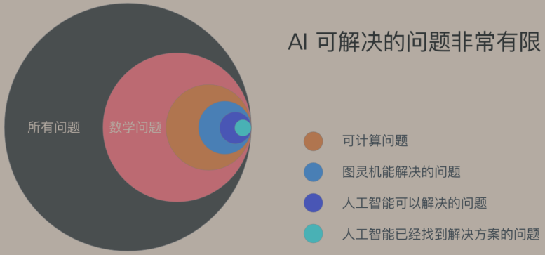
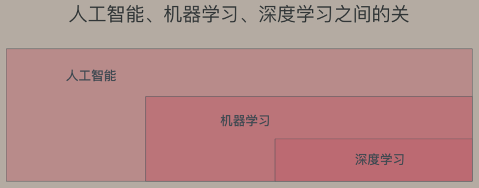

人工智能概述
Contents
什么是人工智能
人工智能（Artificial Intelligence），英文缩写为AI。它是研究、开发用于模拟、延伸和扩展人的智能的理论、方法、技术及应用系统的一门新的技术科学。 人工智能是计算机科学的一个分支，它企图了解智能的实质，并生产出一种新的能以人类智能相似的方式做出反应的智能机器。
传统软件是“基于规则”的，需要人为的设定条件，并且告诉计算机符合这个条件后该做什么。
人工智能是机器从“特定的”大量数据中总结规律，归纳出某些“特定的知识”，然后将这种“知识”应用到现实场景中去解决实际问题。
现阶段：
人工智能是一种工具，和传统软件一样，是为了解决实际问题而存在的。
人工智能技能只能解决特定的问题，而不是什么都能做。
人工智能知其然，但不知所以然。人工智能是从大量数据中总结归纳知识，是建立在“归纳逻辑”上的，也会犯很低级的错误。
人工智能的分类
人工智能的能力边界

①世界上有很多问题，只有一小部分是数学问题
②在数学问题里，只有一小部分是有解的
③在有解的问题中，只有一部分是理想状态的图灵机可以解决的
④在后一部分（图灵机可解决的部分），又只有一部分是今天的计算机可以解决的
⑤而AI可以解决的问题，又只是计算机可以解决问题的一部分。
机器学习和深度学习

如图所示，深度学习和机器学习都是人工智能的子领域，深度学习实际上是机器学习的一个子领域。
机器学习
Field of study that gives computers the ability to learn without being explicitly programmed.
机器学习研究和构建的是一种特殊算法（而非某一个特定的算法），能够让计算机自己在数据中学习从而进行预测。
Author nanshusu
LastMod 2021-08-26